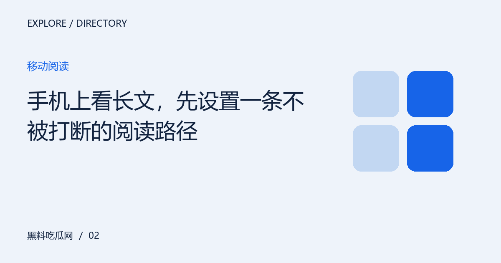

手机上看长文，先设置一条不被打断的阅读路径
把小屏阅读拆成定位、通读与回看三步，兼顾字号、屏幕方向和链接打开方式，让信息不会散落在多个页面。

先明确这次阅读要解决什么
手机阅读长文的难点不只是屏幕小，而是通知、跳转和页面位置容易打断理解。尤其读到一半转去看另一篇，回来时往往只记得标题而不记得论证。先知道文章在回答什么，再决定是否深入，比不断滑动寻找结论更省力。
把入口和信息组织成一条路径
先浏览标题和小标题，确认问题与你有关，再按顺序通读。需要查阅相关材料时，可以使用浏览器已有的标签页功能，并在返回后回到原来的小节。字号应以舒适阅读为准；横竖屏切换、系统文字缩放和浏览器阅读模式的表现，也可以按自己的设备实际测试。
可以逐项核对的阅读清单
不必一次打开所有相关页面。先围绕本篇问题保留最有用的一组线索，再按下面的顺序检查。核对的目标不是证明预设结论，而是知道自己已经确认什么、还有什么缺口；如果某一步没有材料支持，就停在该处，不用其他人的语气和热度替代依据。
- 先扫过标题和段落结构
- 需要回看的位置用浏览器书签记录
- 链接跳转后确认仍是预期内容
- 返回原文时重读上一段
保留边界，让后续浏览更有效
没有适合所有手机的固定字号或阅读时长。设备、视力与环境都不同，移动版也不应该被理解为内容更少的版本。如果某些模块超出屏幕，应优先反馈页面排版问题，而不是通过频繁缩放来勉强阅读。
编辑演示：本文用于展示专题阅读；虚构情境不构成真实人物或事件报道。
下一篇：网页版与手机版，是两套地址还是同一份内容？ →